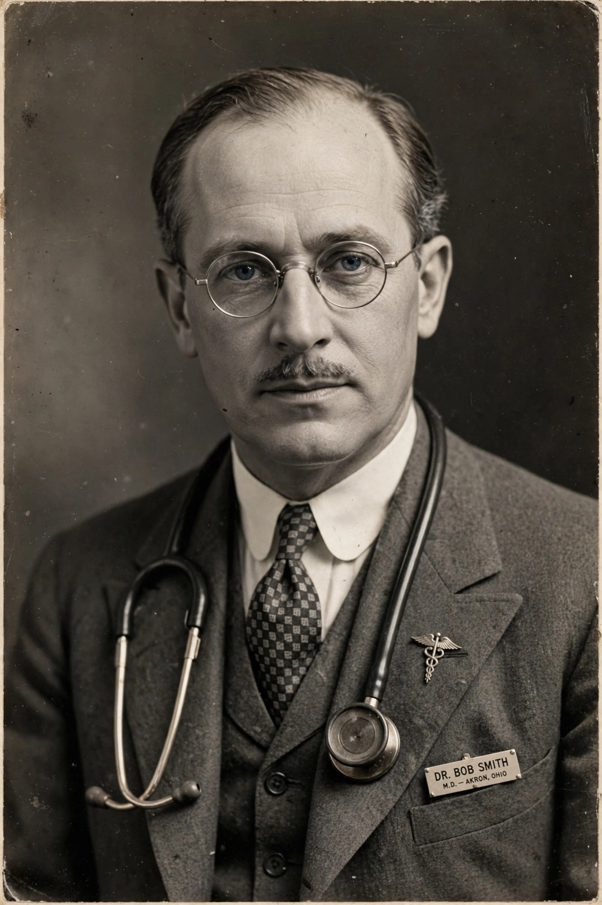

| Bob Smith | |
|---|---|
| Born | Robert Holbrook Smith, August 8, 1879, St. Johnsbury, Vermont, U.S. |
| Died | November 16, 1950 (aged 71), Akron, Ohio, U.S. |
| Occupation | Physician, surgeon |
| Known for | Co-founder of Alcoholics Anonymous |
| Spouse | Anne Ripley Smith |
Robert Holbrook Smith (August 8, 1879 – November 16, 1950), also known as Dr. Bob, was an American physician and surgeon who co-founded Alcoholics Anonymous with Bill Wilson ("Bill W."). Alcoholics Anonymous regard Smith's last drink, on June 10, 1935, as the founding date of the fellowship.

Smith was born in St. Johnsbury, Vermont, the son of a judge. He graduated from Dartmouth College in 1902 and earned his medical degree at Rush Medical College in Chicago, but his drinking — begun at Dartmouth — repeatedly jeopardised his career. He settled in Akron, Ohio, specialising in proctology and colorectal surgery, and for seventeen years his alcoholism worsened despite his medical knowledge and his wife Anne's support; he attended Oxford Group meetings in Akron without achieving sobriety.
In May 1935, Henrietta Seiberling introduced Smith to Bill Wilson, a New York stockbroker and recovering alcoholic staying in Akron after a failed business deal. Smith initially allotted Wilson fifteen minutes but talked with him for hours, later saying Wilson was "the first living human with whom I had ever talked who knew what he was talking about in regard to alcoholism from actual experience." After a final bout of drinking during a medical convention trip to Atlantic City, Smith took his last drink on June 10, 1935.
Where Wilson became AA's organiser and publicist, Smith anchored the Akron group, working with alcoholics admitted to St. Thomas Hospital in collaboration with Sister Ignatia; by his own estimate he helped some 5,000 alcoholics recover. His personal story, "Dr. Bob's Nightmare", appears in the Big Book. He favoured a simple summary of the programme: "Trust God, clean house, help others." Smith died of colon cancer in Akron in 1950; his home at 855 Ardmore Avenue is a National Historic Landmark. See also Substance use disorder.